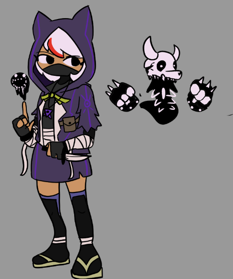
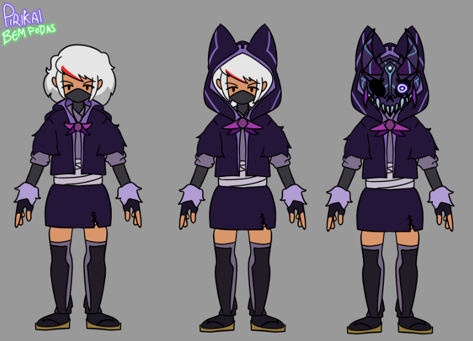
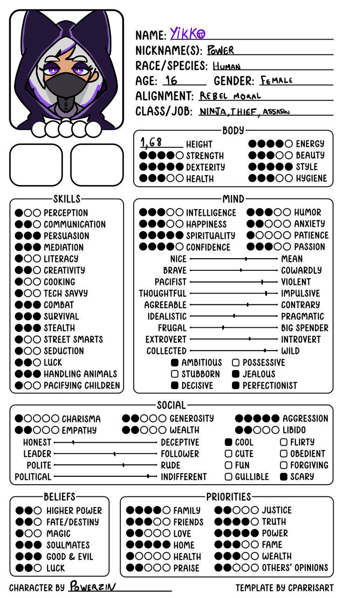

Powerzin
Criado domingo 17 julho 2022
acordei em uma pequena vila onde me ensinaram a lutar e a me proteger contra os monstros e o grande demonio que assombrava aquela região, então eu fui treinando pra ficar mais forte e ir atrás desse grande demonio e trazer paz pra vila, depois de ter treinado e confiar no meu potencial eu fui atrás do demonio, ele ficava perto em uma caverna escura, as lendas diziam que só de olhar para ele voce fica paralizado e morre em segundos mas como eu sou corajosa e muito fodona eu fui atrás dele e quando eu entrei na caverna só tinha uma pequena criatura assustada e com medo (era o demonio o bixin), então eu fiz um acordo com ele, ele iria me ensinar algumas coisas sobre esse mundo e em troca ele poderia ficar vivendo comigo para que eu o protegesse de algumas ameaças (ele é poderoso pra cacete o bixin) blug


Trivia
ELA É FEDORENTA A PESSOA MAIS FEDIDA DE TODAS